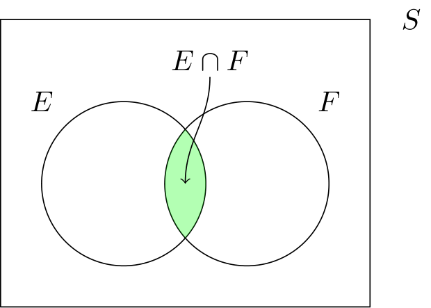

Definizione - Funzione di massa congiunta (v. c. discrete)
Associando ad un esperimento due variabili casuali discrete \[ X \in \{ x_1, \ldots, x_n \} \] e \[ Y \in \{ y_1, \ldots, y_n \} \] si definisce la funzione di massa di probabilità congiunta associata a tali variabili \( p(a, b)\) che è una funzione del tipo \[ p: \mathbb{R}^2 \to [0,1] \] tale che \[ p(a, b) = P(X = a \wedge Y = b) \]
Proprietà
Considerando tale funzione si ha che: \[ \sum_{j = 1}^n \ \sum_{k = 1}^m p(x_j, y_k) = 1 \]Definizione - Funzione di massa di probabilità marginale
Considerando due variabili casuali \( X, Y\) discrete, si definisce la funzione di massa di probabilità marginale
- per \( X\) la funzione \( p_X\) \[ \begin{array}{lcl} p_X(a) & = & P(X = a, Y \leq +\infty) \\ & = & \sum_{k = 1}^m p(a, y_k) \end{array} \]
- per \( Y\) la funzione \( p_Y\) \[ \begin{array}{lcl} p_Y(b) & = & P(X \leq +\infty, Y = b) \\ & = & \sum_{j = 1}^n p(x_j, b) \end{array} \]
Definizione - Funzione di ripartizione di probabilità congiunta (v. c. discrete)
Associando ad un esperimento due variabili casuali discrete \[ X \in \{ x_1, \ldots, x_n \} \] e \[ Y \in \{ y_1, \ldots, y_n \} \] si definisce la funzione di ripartizione di probabilità congiunta associata a tali variabili \( F(a, b)\) che è una funzione del tipo \[ F: \mathbb{R}^2 \to [0,1] \] tale che \[ F(a, b) = P(X \leq a \wedge Y \leq b) \]
Proprietà
Considerando tale funzione si ha che:- considerando \( a = +\infty\) e \( b = +\infty\) si ha che \[ F(+\infty, +\infty) = 1 \]
- considerando \( a = -\infty\) e \( b = -\infty\) si ha che \[ F(-\infty, -\infty) = 0 \]
- la funzione \( F\) è "a gradini" (considerando le \( 3\) dimensioni) (dato che si stanno trattando variabili casuali discrete).
Definizione - Funzione di ripartizione di probabilità marginale
Considerando due variabili casuali \( X, Y\) discrete si definisce la funzione di ripartizione di probabilità marginale
- per \( X\) la funzione \( F_X\) \[ \begin{array}{lcl} F_X(a) & = & P(X \leq a, Y \leq +\infty) \\ & = & F(a, +\infty) \end{array} \]
- per \( Y\) la funzione \( F_Y\) \[ \begin{array}{lcl} F_Y(b) & = & P(X \leq +\infty, Y \leq b) \\ & = & F(+\infty, b) \end{array} \]
Esempio - Determinare la funzione di massa di probabilità congiunta e marginale
Considerando una scatola contenente
Dato che si effettuano \( 3\) estrazioni si ha che entrambe le variabili possono assumere valori da \( 0\) a \( 3\), ovvero \[ X, Y \in \{ 0, 1, 2, 3 \} \] Per rappresentare tale funzione è possibile utilizzare una tabella, ovvero Per calcolare tale funzione è necessario calcolare qual è la probabilità che entrambe le variabili casuali assumano i valori.
Per calcolare tale funzione è necessario calcolare qual è la probabilità che entrambe le variabili casuali assumano i valori.
Consideriamo innanzitutto i casi impossibili (probabilità \( 0\)), ovvero quei casi in cui si effettuano più di tre estrazioni, ovvero Considerando invece gli altri casi, è necessario effettuare i calcoli:
- \( 3\) palline rosse;
- \( 4\) palline verdi;
- \( 5\) palline blu.
Dato che si effettuano \( 3\) estrazioni si ha che entrambe le variabili possono assumere valori da \( 0\) a \( 3\), ovvero \[ X, Y \in \{ 0, 1, 2, 3 \} \] Per rappresentare tale funzione è possibile utilizzare una tabella, ovvero
Consideriamo innanzitutto i casi impossibili (probabilità \( 0\)), ovvero quei casi in cui si effettuano più di tre estrazioni, ovvero

- per il caso \( X = 0\) e \( Y = 0\), si ha che su \( 3\) estrazioni devono essere sempre estratte palline blue, ovvero \[ p(0, 0) = P(X = 0 \ \wedge \ Y = 0) = \frac{C_{5, 3}}{C_{12, 3}} = \frac{5!}{2! \cdot 3!} \cdot \frac{9! \cdot 3!}{12!} = \frac{1}{22} \]
- per il caso \( X = 1\) e \( Y = 0\), si ha che \[ p(1, 0) = P(X = 1 \ \wedge \ Y = 0) = \frac{C_{3, 1} \cdot C_{5,2}}{C_{12, 3}} = 3 \cdot \frac{5!}{3! \cdot 2!} \cdot \frac{9! \cdot 3!}{12!} = \frac{3}{22} \]
- per il caso \( X = 2\) e \( Y = 0\), si ha che \[ p(2, 0) = P(X = 2 \ \wedge \ Y = 0) = \frac{C_{3, 2} \cdot C_{5,1}}{C_{12, 3}} = \frac{3!}{1! \cdot 2!} \cdot 5 \cdot \frac{9! \cdot 3!}{12!} = \frac{3}{44} \]
- per il caso \( X = 3\) e \( Y = 0\), si ha che \[ p(2, 0) = P(X = 3 \ \wedge \ Y = 0) = \frac{C_{3, 3}}{C_{12, 3}} = \frac{1}{220} \]
- per il caso \( X = 0\) e \( Y = 1\), si ha che \[ p(0, 1) = P(X = 0 \ \wedge \ Y = 1) = \frac{C_{4, 1} \cdot C_{5, 2}}{C_{12, 3}} = 4 \cdot \frac{5!}{3! \cdot 2!} \cdot \frac{9! \cdot 3!}{12!} = \frac{2}{11} \]
- per il caso \( X = 1\) e \( Y = 1\), si ha che \[ p(1, 1) = P(X = 1 \ \wedge \ Y = 1) = \frac{C_{3, 1} \cdot C_{4, 1} \cdot C_{5, 1}}{C_{12, 3}} = 3 \cdot 4 \cdot 5 \cdot \frac{9! \cdot 3!}{12!} = \frac{3}{11} \]
- per il caso \( X = 2\) e \( Y = 1\), si ha che \[ p(2, 1) = P(X = 2 \ \wedge \ Y = 1) = \frac{C_{3, 2} \cdot C_{4, 1}}{C_{12, 3}} = 3 \cdot 4 \cdot \frac{9! \cdot 3!}{12!} = \frac{3}{55} \]
- per il caso \( X = 0\) e \( Y = 2\), si ha che \[ p(0, 2) = P(X = 0 \ \wedge \ Y = 2) = \frac{C_{4, 2} \cdot C_{5, 1}}{C_{12, 3}} = \frac{4!}{2! \cdot 2!} \cdot 5 \frac{9! \cdot 3!}{12!} = \frac{3}{22} \]
- per il caso \( X = 1\) e \( Y = 2\), si ha che \[ p(0, 2) = P(X = 1 \ \wedge \ Y = 2) = \frac{C_{3, 1} \cdot C_{4, 2}}{C_{12, 3}} = 3 \cdot \frac{4!}{2! \cdot 2!} \cdot \frac{9! \cdot 3!}{12!} = \frac{9}{110} \]
- per il caso \( X = 0\) e \( Y = 3\), si ha che \[ p(0, 2) = P(X = 0 \ \wedge \ Y = 3) = \frac{C_{4, 3}}{C_{12, 3}} = 4 \cdot \frac{9! \cdot 3!}{12!} = \frac{1}{55} \]
Data tale funzione, si ha che è possibile ricavare le funzioni di massa marginale \( p_X\) e \( p_Y\) sommando le probabilità ottenute mantenendo la variabile casuale costante, ovvero